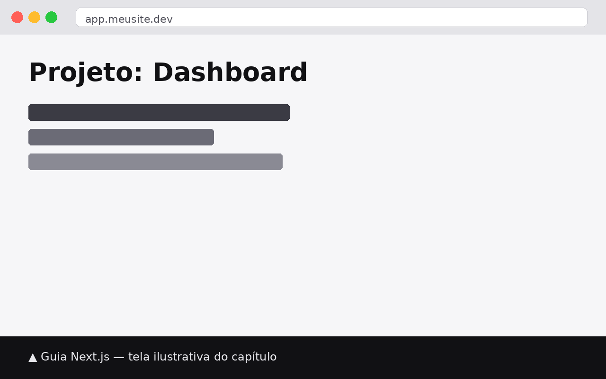

Projeto: Dashboard com auth, gráficos e tabela
A Ana precisa de um painel interno para ver as vendas: só quem está logado pode entrar, a tabela de pedidos é grande (pagina no servidor) e o gráfico é pesado (carrega só no navegador). Neste projeto você monta esse dashboard juntando proteção de rotas com middleware, dados assíncronos no servidor e um componente de gráfico isolado num chunk separado.
- Login simples: Server Action que seta um
cookie httpOnlyde sessão middleware.jsprotegendo rotas: checa o cookie e redireciona para/login- Tabela com paginação no servidor via
searchParams(?pagina=2) - Gráfico com biblioteca pesada (ex.: recharts) via
dynamic(..., { ssr: false }) - Layout aninhado
app/dashboard/layout.jsxcom o menu lateral
A ideia: a sala do gerente com crachá na porta
O dashboard é a sala do gerente: só entra quem mostra o crachá na porta. Esse crachá é um cookie httpOnly (o navegador manda sozinho em toda requisição, mas o JavaScript da página não consegue ler — então não dá para roubar por XSS), conferido pelo middleware em todas as rotas de /dashboard. Dentro da sala, a tabela de pedidos é paginada no servidor (a página 2 vem pronta do servidor via ?pagina=2, não com 10 mil linhas no navegador), e o gráfico, que é pesado, só é montado no navegador.
O truque do gráfico: bibliotecas de gráfico acessam window e quebram o SSR. A solução é o dynamic(() => import('./Grafico'), { ssr: false }) dentro de um Client Component — o chunk baixa só quando a página do dashboard abre, e o resto do app continua leve (você viu isso na aula de bundle).
Passo 1 — login com cookie httpOnly + middleware
'use server';
import { cookies } from 'next/headers';
import { redirect } from 'next/navigation';
const SENHA = process.env.DASH_SENHA; // em produção: hash + banco de usuários (Auth.js)
export async function login(formData) {
const senha = formData.get('senha');
if (senha !== SENHA) {
return { erro: 'Senha incorreta' };
}
const jar = await cookies();
jar.set('sessao', 'logado', {
httpOnly: true, // o JS do navegador NÃO lê esse cookie
secure: process.env.NODE_ENV === 'production',
sameSite: 'lax',
path: '/',
maxAge: 60 * 60 * 8, // 8 horas
});
redirect('/dashboard');
}
import { NextResponse } from 'next/server';
export function middleware(req) {
const sessao = req.cookies.get('sessao')?.value;
const protegido = req.nextUrl.pathname.startsWith('/dashboard');
if (protegido && sessao !== 'logado') {
return NextResponse.redirect(new URL('/login', req.url));
}
if (req.nextUrl.pathname === '/login' && sessao === 'logado') {
return NextResponse.redirect(new URL('/dashboard', req.url));
}
return NextResponse.next();
}
export const config = {
matcher: ['/dashboard/:path*', '/login'], // só roda o middleware nessas rotas
};
// ⚠ o middleware roda no Edge — não dá para usar fs/Prisma aqui
Passo 2 — layout do dashboard e a tabela paginada no servidor
import Link from 'next/link';
export default function DashboardLayout({ children }) {
return (
<div style={{ display: 'flex' }}>
<nav style={{ width: 200, padding: 16, borderRight: '1px solid #ccc' }}>
<strong>📊 Painel</strong>
<ul>
<li><Link href="/dashboard">Visão geral</Link></li>
<li><Link href="/dashboard/pedidos">Pedidos</Link></li>
</ul>
</nav>
<main style={{ flex: 1, padding: 16 }}>{children}</main>
</div>
);
}
import Link from 'next/link';
// dados mockados — troque por Prisma/ banco depois
async function getPedidos(pagina) {
const TODOS = Array.from({ length: 137 }, (_, i) => ({
id: 1000 + i, cliente: `Cliente ${i + 1}`, total: (Math.random() * 500).toFixed(2), status: i % 3 ? 'pago' : 'pendente',
}));
const POR_PAGINA = 20;
return {
itens: TODOS.slice((pagina - 1) * POR_PAGINA, pagina * POR_PAGINA),
totalPaginas: Math.ceil(TODOS.length / POR_PAGINA),
};
}
export default async function Pedidos({ searchParams }) {
const { pagina = '1' } = await searchParams; // Next.js 15: searchParams é Promise
const { itens, totalPaginas } = await getPedidos(Number(pagina));
return (
<>
<h1>📦 Pedidos</h1>
<table className="ref">
<thead><tr><th>ID</th><th>Cliente</th><th>Total</th><th>Status</th></tr></thead>
<tbody>
{itens.map(p => (
<tr key={p.id}>
<td>#{p.id}</td><td>{p.cliente}</td><td>R$ {p.total}</td><td>{p.status}</td>
</tr>
))}
</tbody>
</table>
<p>
{Array.from({ length: totalPaginas }, (_, i) => i + 1).map(n => (
<Link key={n} href={`/dashboard/pedidos?pagina=${n}`} style={{ marginRight: 8 }}>
{n === Number(pagina) ? <strong>{n}</strong> : n}
</Link>
))}
</p>
</>
);
}
Passo 3 — o gráfico pesado só no cliente
import dynamic from 'next/dynamic';
import { Suspense } from 'react';
// recharts usa window → só pode renderizar no navegador
const GraficoVendas = dynamic(() => import('@/components/GraficoVendas'), {
ssr: false,
loading: () => <p>📊 Carregando gráfico…</p>,
});
async function getResumo() {
// no servidor: busca os números (banco/API) — aqui mockado
return { vendasHoje: 1240, pedidos: 37, clientes: 12 };
}
export default async function Dashboard() {
const resumo = await getResumo();
return (
<main>
<h1>📊 Visão geral</h1>
<p>Vendas hoje: R$ {resumo.vendasHoje} · Pedidos: {resumo.pedidos} · Novos clientes: {resumo.clientes}</p>
<Suspense fallback={<p>⏳ …</p>}>
<GraficoVendas />
</Suspense>
</main>
);
}
'use client';
import { LineChart, Line, XAxis, YAxis, Tooltip } from 'recharts';
const DADOS = [
{ mes: 'jan', vendas: 400 }, { mes: 'fev', vendas: 650 }, { mes: 'mar', vendas: 900 },
];
export default function GraficoVendas() {
return (
<LineChart width={600} height={300} data={DADOS}>
<XAxis dataKey="mes" /><YAxis /><Tooltip />
<Line type="monotone" dataKey="vendas" stroke="#8884d8" />
</LineChart>
);
}

Missão: no código abaixo, o gráfico está comentado. Complete a linha do dynamic import com a opção que desliga o SSR do componente (o gráfico só pode renderizar no navegador): { ssr: false }. Rode e clique em Verificar missão.
// no Next.js: import dynamic from 'next/dynamic';
const dynamic = (fn, opts) => fn().then ? null : null; // (simulação)
function App() {
// TODO: use dynamic(() => Promise.resolve({ default: Grafico })) com { ssr: false }
const Grafico = () => <p>📊 gráfico (só no navegador)</p>;
return (
<div>
<h1>📊 Dashboard</h1>
<Grafico />
</div>
);
}function App() {
// dynamic(() => import('./Grafico'), { ssr: false })
const Grafico = () => <p>📊 gráfico (só no navegador — ssr: false)</p>;
return (
<div>
<h1>📊 Dashboard</h1>
<Grafico />
</div>
);
}Quando dá errado
window is not defined porque esqueceu o ssr: false:ReferenceError: window is not defined
at GraficoVendas (components/GraficoVendas.jsx)
→ dynamic(() => import('./GraficoVendas'), { ssr: false }) dentro de 'use client'</n (e NUNCA ssr:false em Server Component — o Next.js proíbe)
/dashboard, mas o login broke porque o matcher esqueceu a rota — ou o cookie foi setado com path errado. E cuidado: middleware roda no Edge, sem acesso a fs/banco pesado:Module not found: Can't resolve 'fs' in middleware → no middleware só dá para ler cookie/headers e redirecionar; a checagem pesada de usuário fica no layout/página (servidor)
Exercícios
O cookie de sessão deve ser:
A paginação da tabela vem no servidor via:
O middleware.js com matcher em /dashboard/:path* serve para:
Complete o cookie seguro de sessão:
Complete o matcher do middleware que protege o dashboard: